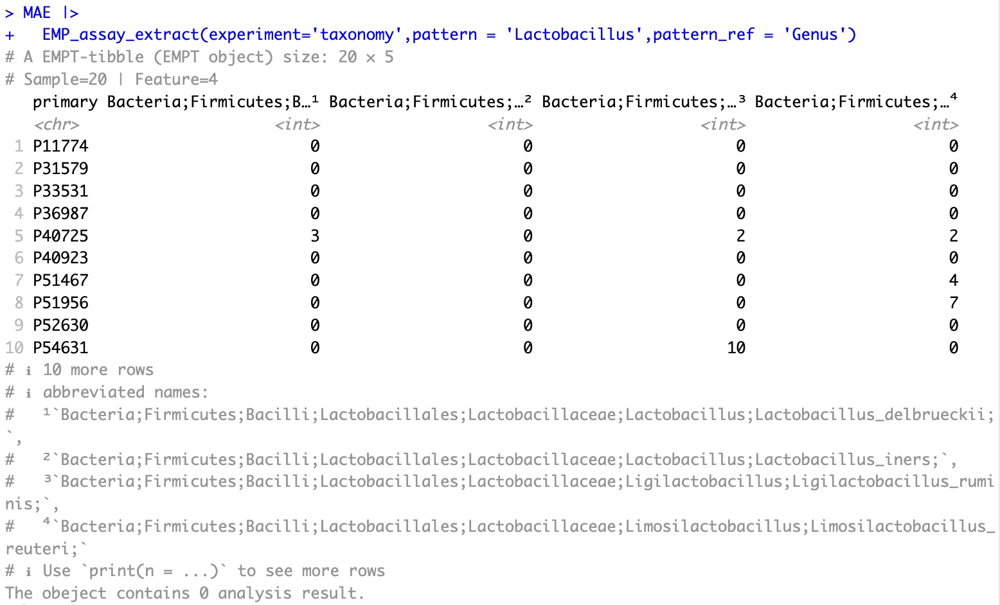
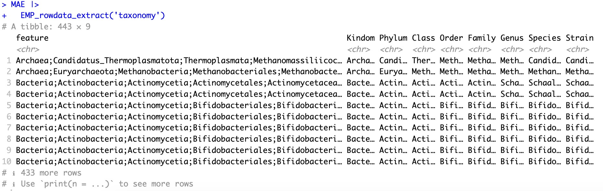
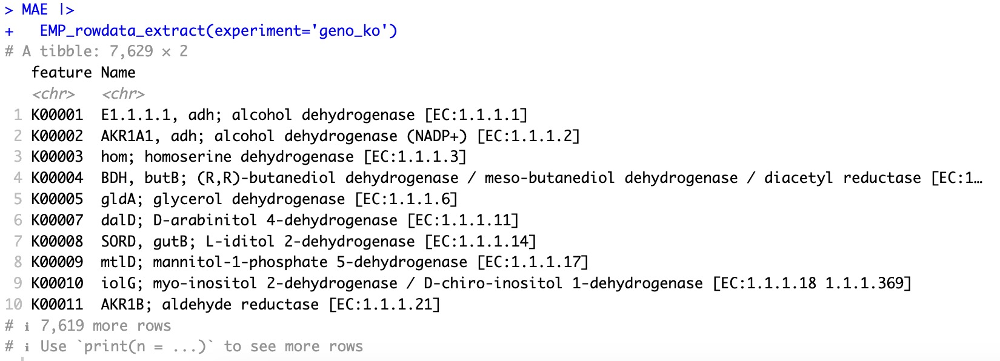
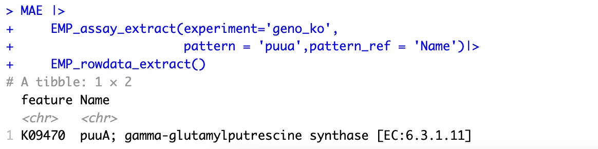
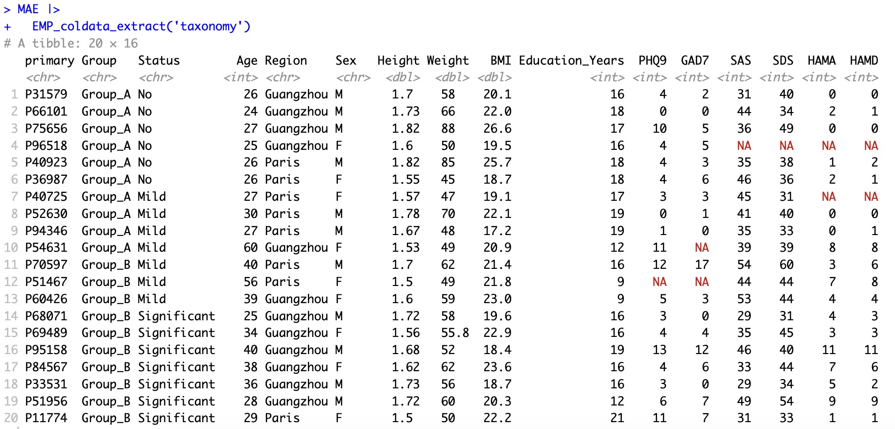
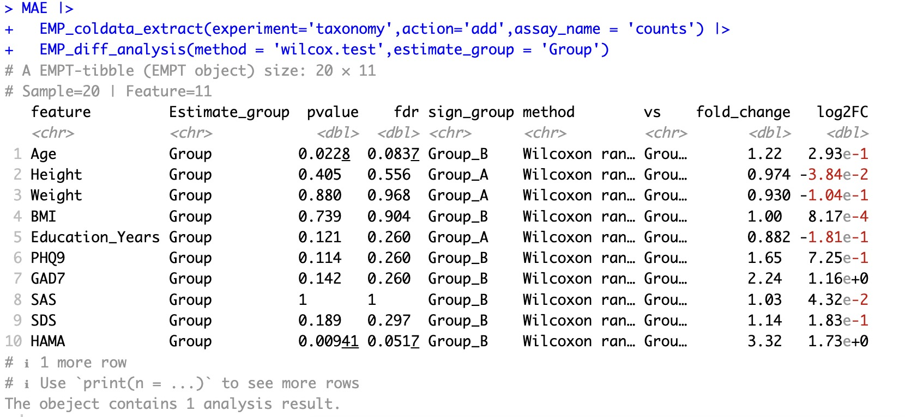

4. 数据提取 Data Extract
模块Data Extract 包含三个模块：EMP_assay_extract、EMP_coldta_extract和EMP_rowdata_extract。可帮助用户从MAE对象中提取指定的组学项目数据，以供后续的下游分析。
为了帮助用户更好地理解assay、coldata 、rowdata之间的关系，本章节我们以16s rRNA基因测序的物种注释（taxonomy）以及与之对应的微生物功能基因的KO注释（geno_ko）、微生物功能基因的ec酶注释（geno_ec）为例进行说明。
4.1 提取组学项目的实验数据assay
🏷️示例1：提取组学项目taxnomy的assay，获取物种注释丰度矩阵。
MAE |>
EMP_assay_extract(experiment='taxonomy')

🏷️示例2：提取组学项目taxonomy的assay，通过指定参数pattern_ref和pattern来查找roldata的Genus列为Lactobacillus的特征，进一步在assay中提取这些特征对应的物种注释丰度矩阵。
①模块
EMP_assay_extract内部提供了检索参数，帮助快速发现感兴趣特征的丰度矩阵。②此处的
pattern和pattern_ref均是基于rowdata进行字符串匹配查找。③指定参数
action='get'，可以直接提取数据矩阵的数据框。
MAE |>
EMP_assay_extract(experiment='taxonomy',
pattern = 'Lactobacillus',pattern_ref = 'Genus')

🏷️示例3：提取组学项目geno_ko的assay，通过指定参数pattern_ref和pattern来查找roldata的Name列中为puua或puuc的特征，进一步在assay中提取这些特征对应的KO注释丰度矩阵。
此处的
pattern和pattern_ref均是基于rowdata进行字符串匹配查找。
MAE |>
EMP_assay_extract(experiment='geno_ko',
pattern = c('puua','puuc'),pattern_ref = 'Name')

4.2 提取组学项目的特征相关数据rowdata
①当模块
EMP_rowdata_extract指定了组学项目名称时，输出的是该组学项目的特征相关信息（例如：指定EMP_rowdata_extract(experiment='taxonomy')，则输出特征的界门纲目科属种株的分级注释；指定EMP_rowdata_extract(experiment='geno_ko')，则输出对应KO基因在KEGG数据库检索的相关信息。如果未指定参数experiment，则输出整个MAE对象中全部组学特征的相关信息。②此模块不支持参数
action。
🏷️示例1：提取组学项目taxnomy的rowdata。
MAE |>
EMP_rowdata_extract(experiment='taxonomy')

🏷️示例2：提取组学项目geno_ko的rowdata。
MAE |>
EMP_rowdata_extract(experiment='geno_ko')

🏷️示例3：提取组学项目geno_ko的assay，通过指定参数pattern_ref和pattern来查找roldata的Name列中为puua的特征，并在assay中提取这些特征对应的KO注释丰度矩阵；最后查看puua特征的相关信息。
MAE |>
EMP_assay_extract(experiment='geno_ko',
pattern = 'puua',pattern_ref = 'Name')|>
EMP_rowdata_extract()

4.3 提取组学项目的样本相关数据coldata
当
EMP_coldata_extract内指定了组学名称时，输出的是该组学样本的样本相关数据信息。如果未指定experiment参数则输出的是整个MAE对象中全部队列样本的样本相关数据信息。
🏷️示例1：提取组学项目taxonomy的coldata。
MAE |>
EMP_coldata_extract(experiment='taxonomy')

🏷️示例2：将样本表型数据coldata转为实验数据assay，并进行差异性分析。
EasyMultiProfiler 包默认使用assay进行流程分析。如果用户需要分析coldata，可以指定参数action='add'将coldata转换为assay，即可进行各种模块分析。
①在模块EMP_coldata_extract中，参数
coldata_to_assay可以指定将特定的coldata转换为assay。②在模块EMP_coldata_extract中，当参数
coldata_to_assay缺省时，默认将coldata中的全部连续型变量转入assay。
MAE |> EMP_coldata_extract(experiment='taxonomy',action='add',assay_name = 'counts') |>
EMP_diff_analysis(method = 'wilcox.test',estimate_group = 'Group')
